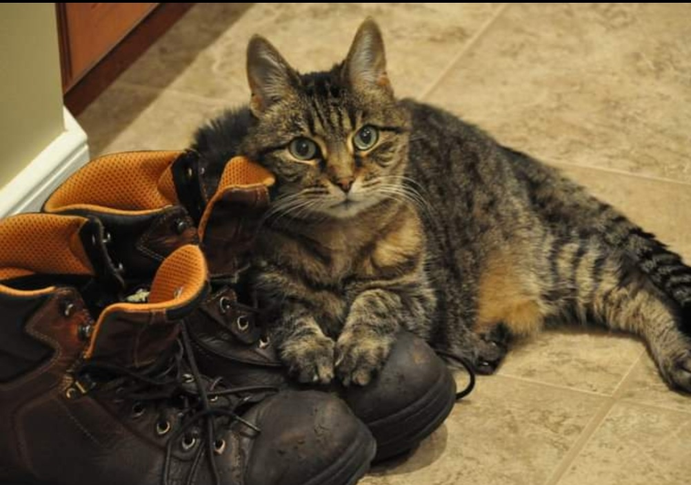
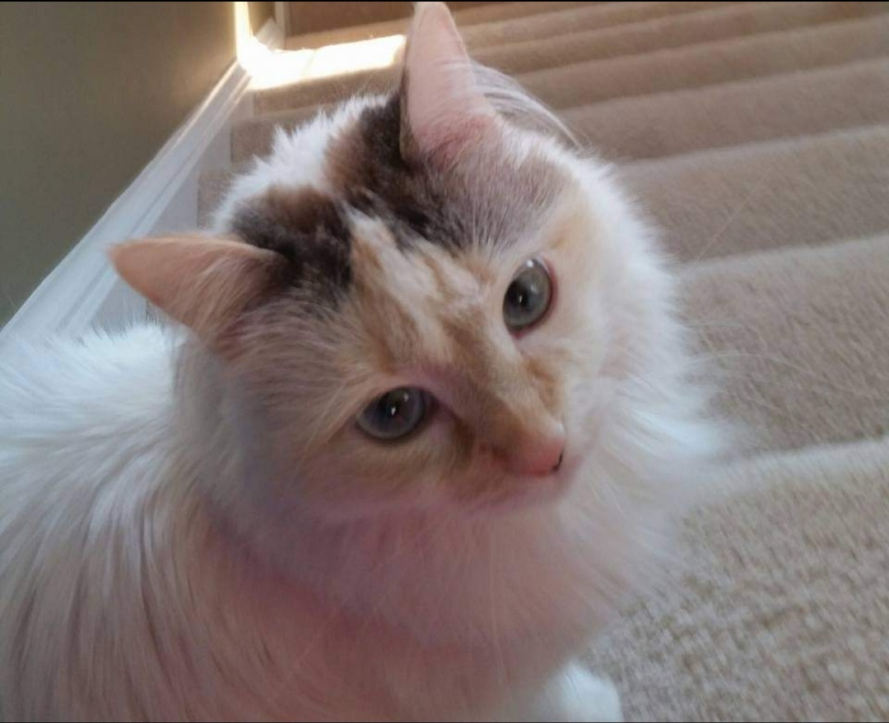
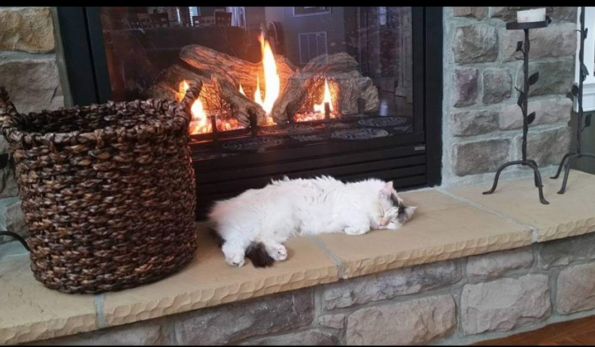
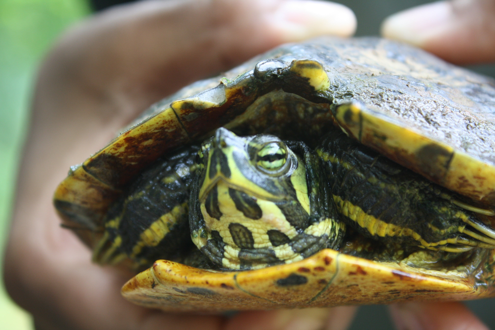
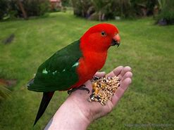
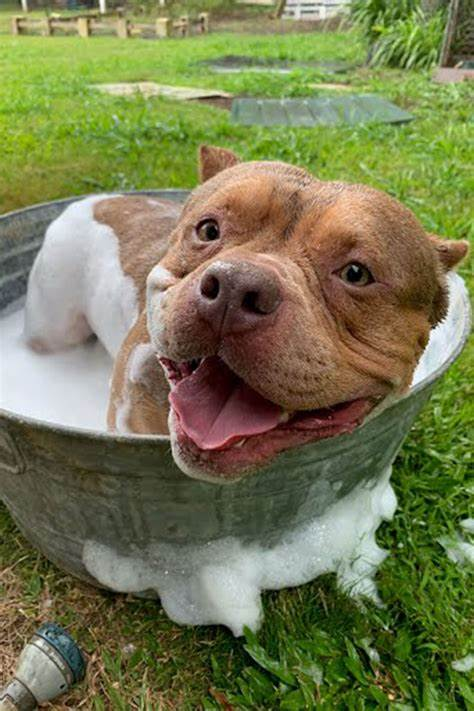
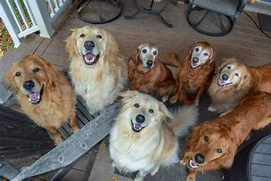
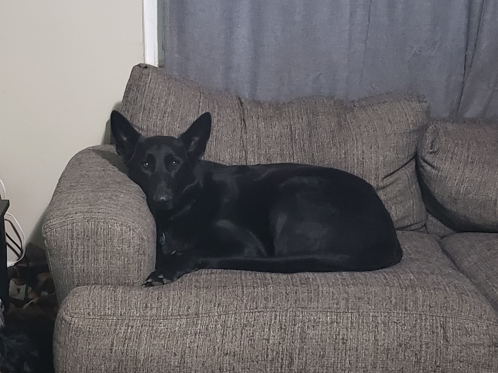

Sarah Grimm
This is Cheyenne. She lived to be 19 years old! No one really knows why, but for some reason she LOVED her dad's stinky work boots.🤷
After losing Cheyenne, Sarah and her husband adopted Haley from a shelter. Many fan theories hold that she's actually just a ragdoll, but the amount of hair left around the house indicates she probably is, in fact, a cat.
 Anjelique Butler
Anjelique is blessed to live in an area that's teeming with animals! It's hard to walk outside without almost stepping on turtles and there are all kinds of birds around as well. On top of all the natural visitors she has, Anjelique loves dogs (what fine, upstanding citizen doesn't?!) of all kinds. And while none of the animals shown here are hers, her life wouldn't be quite the same if it wasn't so full of furry, feathery, and hard-shelled friends!
   Harry Singh
While Harry has nothing against animals, he has been pet free since '93! Or, maybe even before then?
Chris Mickey
This is Loki. He's a German Shepherd, solid black except for a small white streak down his chest. Basically, he's either sleeping, chasing his ball, or begging you to throw his ball.
This is Damion. He's also a German Shepherd, but is much more colorful than his brother. If he's awake, he's doing anything he can to convince Loki to play with HIM rather than mom or dad.

Feast your eyes upon Toby and tremble! Only if you're a stuffed toy, I guess. He holds the house record for grumpiest old man (he's 14) and he's the fastest toy defluffer in the west! Or, at least in Southwestern Ohio.

And finally, he's the odd one out in multiple ways, this is Scraps. He's...a cat? Can you call a cat a mutt? He will be 6 in July and normally just hangs out in boxes or as high off the ground as possible since the big dogs seem convinced he's just a furry ball that doesn't need to be thrown.

And here are a couple more pictures of them, because why not!


Thanks for looking at pictures of our animals!